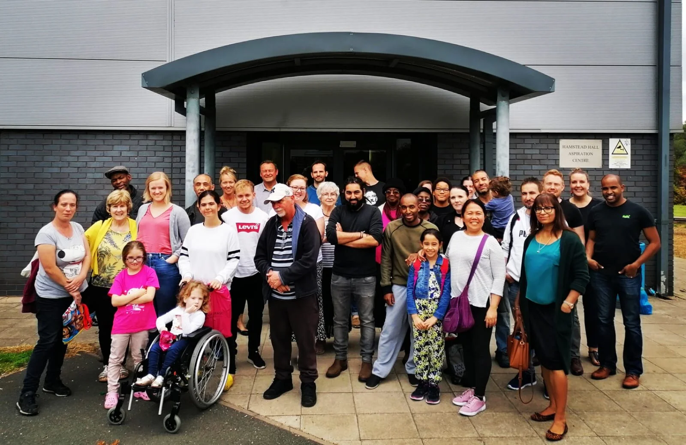

۰۱
کتابمقدس
باور داریم کتابمقدس کلام خداست و پیام آن برای زندگی روزمره امید و راهنمایی قابل اعتماد میدهد.
درباره ما
ما افرادی معمولی از پیشینههای گوناگون هستیم که ایمان به خدا، امید به عیسی و محبت به کتابمقدس ما را گرد هم آورده است.
همه خوشآمدند. برای شرکت در جلسات عمومی لازم نیست کریستادلفین باشید.
برنامهها را ببینید
ما که هستیم
کریستادلفینهای هندزورث جامعهای مسیحی در بیرمنگام هستند. هر هفته گرد هم میآییم تا عیسی را به یاد آوریم، کتابمقدس را بخوانیم و درباره آن گفتوگو کنیم، دعا و سرود بخوانیم و یکدیگر را حمایت کنیم.
اعضای ما از فرهنگها، سنها و مسیرهای زندگی گوناگون میآیند. این تنوع را ارزشمند میدانیم و میکوشیم مهمانان زود احساس راحتی کنند.
آنچه برای ما مهم است
۰۱
باور داریم کتابمقدس کلام خداست و پیام آن برای زندگی روزمره امید و راهنمایی قابل اعتماد میدهد.
۰۲
عیسی مرکز ایمان ماست. هر یکشنبه برای یاد کردن از زندگی، مرگ و رستاخیز او گرد هم میآییم.
۰۳
میخواهیم از یکدیگر مراقبت کنیم، به همسایگان خوشامد بگوییم و ایمان را با مهربانی و فروتنی زندگی کنیم.
نام ما
نام کریستادلفین از دو واژه یونانی میآید و به معنی برادران و خواهران در مسیح است. کریستادلفینها از قرن نوزدهم در بیرمنگام و سراسر جهان گرد هم آمدهاند.
ایمان مشترکی داریم، اما هر جامعه محلی جلسات و فعالیتهای خود را اداره میکند. گاهی جامعه محلی کریستادلفین را «اکلیژیا» مینامند؛ واژهای کتابمقدسی به معنی انجمن یا گردهمایی.
«یکدیگر را تشویق کنید و یکدیگر را بنا نمایید.»
اول تسالونیکیان ۵:۱۱